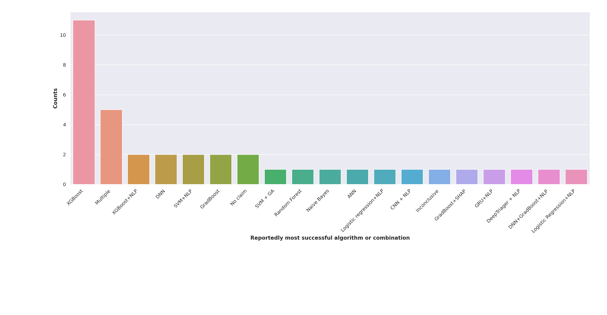

This is of course a simplified abstraction of the process as, at each stage, additional procedures, investigations or treatments that are situation, patient or institution dependent may occur; however, we do believe this is a useful abstraction in the context of autonomous systems in the context of emergency medicine.
- Stage 0: Provision of information and social interaction;
- Stage 1: Collating low level subjective data and zeroth level triage;
- Stage 2: Collating more specific subjective data and primary triage;
- Stage 3: Collating objective data and secondary triage;
- Stage 4: Interpret and analyse collected data, approve additional investigations;
- Stage 5: Examination and assessment of patient, diagnose, treat, dispose.
Search Terms and Inclusion-Exclusion (IE) Criteria
To determine the inclusion exclusion criteria, we must describe the research questions we have in the
Research questions
- What stage(s) of the triage process are covered by the paper?
- Which technologies, methods or interventions are employed in the paper?
- What type of data, and how many samples are used?
- Is the deployment in regular use?
- Is the deployment patient facing?
- Is the deployment for general triage, or focused to a specific malady?
Inclusion-Exclusion Criteria

Inclusion-Exclusion by phase
 Lyons, B. (2022) Autonomous Systems in Triage, Autonomous Triage. Available at: https://uoy-research.github.io/as-triage-review/ (Accessed: November 1, 2022).
Lyons, B. (2022) Autonomous Systems in Triage, Autonomous Triage. Available at: https://uoy-research.github.io/as-triage-review/ (Accessed: November 1, 2022).
Results
Stage Combinations

Stage 5 breakdown
Technologies breakdown


Illnesses researched
Datafiles
We here include the datafiles generated in the course of the review.
Exported Mendeley files of all collected citations in multiple formats
.xml file
.ris file
.bib file
CSV Files for the additional passes per databases
We here provide .xlsx file generated in the course of the review for replication
Direct Download
Analyses CSV files
Stages Data
Direct Download
Stage 5 Breakdown
Direct Download
Technologies Data
Direct Download
Data Points and Types
Direct Download
Hardware And Most Successful
Direct Download
Python code of analysis performed
Direct Download
Stage 5 breakdown
Technologies breakdown
Illnesses researched
Datafiles
We here include the datafiles generated in the course of the review.
Exported Mendeley files of all collected citations in multiple formats
.xml file .ris file .bib fileCSV Files for the additional passes per databases
We here provide .xlsx file generated in the course of the review for replication
Direct Download